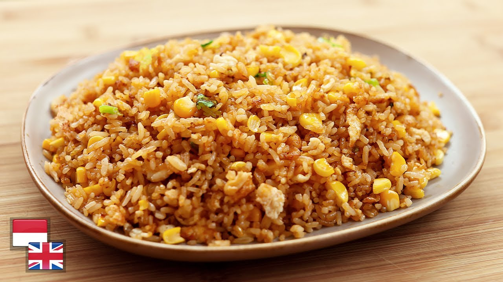

Description
Nasi goreng has been Indonesian staple food
for centuries as Indonesia's agriculture
produces rice. Nasi is cooked rice in Indonesian.
Some historian stated the recipes may have been
influenced from Chinese cooking and every part
in Indonesia has their own distinct nasi goreng
recipes. It is rich-culture-culinary and a must-try!
Ingredients
- 2 plate of steamed rice, best overnight rice
- 3 Chicken eggs
- 2 tsp Cooking oil
- 4 tsp Soy Sauce
- 3 tsp Curshed garlic
- 5 cloves Chopped Onion
- 3 tsp Terasi or Prawn paste
- 1/2 tbsp Salt
Instruction to cook
- Scrambled the eggs and set aside
- Cook crushed garlic, onion and terasi in oil until aromatic
- Add the rice, scrambled egg to the spices and stir-fry for 10 minutes on high heat
- Add soy sauce and continue to stir-fry for another 5 minutes
- Best to use wok and some wok-skill is needed to get the best result
- Dish up alone or garnish with vegetables is also appropriate
Back to Main page